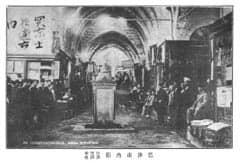
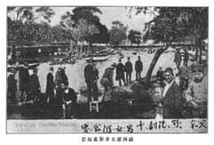

Resim: 17
Resim üstünde: 突京士担逋市内, Türk başkenti Sti Tan Bu (İstanbul) Pazarı’nın içi.
Resim altında: 巴沙市内影，巴沙突语市也。Pazarın içi, Başa Türkçe Pazar demektir.

Resim: 18
Resmin üstünde: 突京欧洲甜水男女游回处. Türk başkenti Avrupa yakasında tatlı su kenarında erkek ve kadınların gezdiği yer.
Resmin altında: 欧洲甜水井游处拓影, Avrupa tarafı tatlu su kuyusu gezi yeri fotoğrafı.